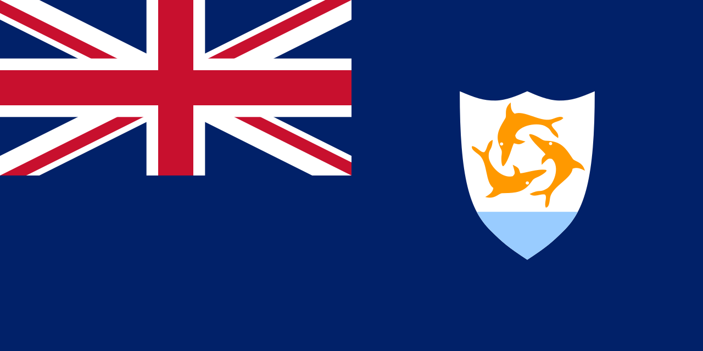

Anguilla
 Anguilla é um território britânico ultramarino localizado no Caribe, fazendo parte das Ilhas Leeward. Com uma área de apenas 91 km², é uma das menores ilhas habitadas do Caribe, possuindo uma população aproximada de 15 mil habitantes. A capital é The Valley, localizada no interior da ilha. Anguilla é conhecida por suas praias de areia branca, águas cristalinas e clima tropical agradável durante todo o ano. A economia depende fortemente do turismo, serviços financeiros offshore e pesca, e a ilha mantém estreitos vínculos administrativos e econômicos com o Reino Unido. A língua oficial é o inglês, e a cultura local reflete uma mistura de tradições africanas e britânicas, desenvolvidas ao longo dos séculos desde a colonização inglesa no século XVII.
História
A história de Anguilla começa com os povos indígenas arawak e caribes, que habitaram a ilha antes da chegada dos europeus. No final do século XVII, colonos britânicos se estabeleceram na ilha, trazendo consigo escravizados africanos para trabalhar na agricultura, especialmente no cultivo de cana-de-açúcar. Durante o período colonial, Anguilla sofreu invasões temporárias de franceses e outros poderes europeus, mas manteve-se sob domínio britânico.
No século XX, Anguilla passou por um período de agitação política. Em 1967, buscando autonomia, a ilha se separou administrativamente de Saint Kitts e Nevis, movimento conhecido como a Revolta de Anguilla, embora a independência total nunca tenha sido buscada. Desde então, Anguilla permanece como território britânico ultramarino, com governo local eleito, mantendo o Reino Unido responsável por defesa e relações exteriores. A ilha desenvolveu uma economia baseada no turismo, serviços financeiros e pesca, consolidando sua estabilidade e infraestrutura para visitantes e residentes.
Cultura
A cultura de Anguilla é uma combinação de influências africanas, britânicas e caribenhas. A música tradicional, incluindo calypso e soca, desempenha papel central em festivais locais e celebrações comunitárias. Danças e apresentações artísticas refletem a herança africana, enquanto eventos culturais modernos mostram a fusão com estilos internacionais. O folclore e a narrativa oral preservam histórias sobre a colonização, resistência e vida cotidiana da ilha.
A culinária é caracterizada pelo uso de frutos do mar, arroz, feijão, legumes e especiarias caribenhas, com pratos típicos como o peixe grelhado e o “Johnny Cake”. O islã e o cristianismo coexistem, embora a maioria da população seja cristã. Festividades como o Anguilla Summer Festival e o Carnival são momentos de grande celebração, reunindo música, dança, esportes e atividades comunitárias. O inglês é a língua oficial, e expressões locais refletem o sotaque e as tradições orais passadas por gerações.


Clima
Anguilla apresenta clima tropical, com temperaturas médias entre 24°C e 31°C durante o ano. O clima é caracterizado por duas estações principais: uma seca, de dezembro a maio, e uma chuvosa, de junho a novembro, período em que a ilha está sujeita a furacões ocasionais. A brisa constante do mar ajuda a amenizar o calor, tornando o clima agradável para turismo e atividades ao ar livre.
Biodiversidade
A biodiversidade em Anguilla é típica de ilhas tropicais caribenhas, com ecossistemas costeiros, recifes de coral, manguezais e áreas de savana costeira. As águas circundantes abrigam uma grande variedade de peixes, tartarugas marinhas e corais, sendo a pesca e o mergulho atividades de destaque. A ilha também abriga aves endêmicas e migratórias, assim como pequenas espécies de mamíferos adaptadas ao ambiente insular.
Esforços de conservação ambiental incluem a proteção de recifes de corais e áreas de manguezais, além da regulamentação da pesca e do turismo ecológico, visando manter o equilíbrio entre desenvolvimento econômico e preservação ambiental.


Cidades
As principais cidades de Anguilla refletem o tamanho compacto da ilha, com The Valley sendo a capital e centro administrativo, política e comercial. Outras áreas importantes incluem Road Bay, Sandy Ground e East End, onde a vida comunitária, comércio local e turismo se combinam. As cidades possuem infraestrutura adaptada ao turismo, com hotéis, restaurantes, marinas e centros de lazer, garantindo a integração entre residentes e visitantes. A vida urbana é tranquila, com forte influência da cultura local e proximidade com o mar, característica marcante das comunidades insulares do Caribe.